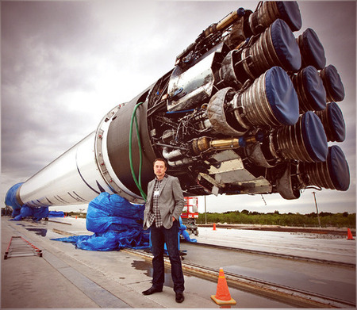
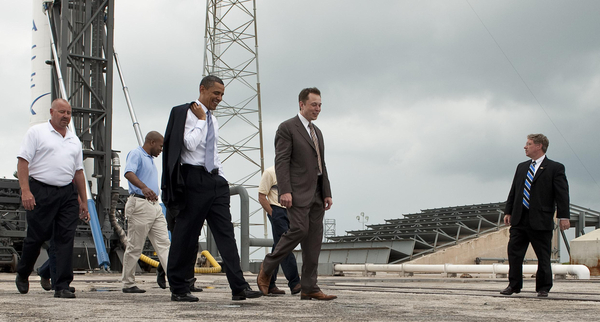
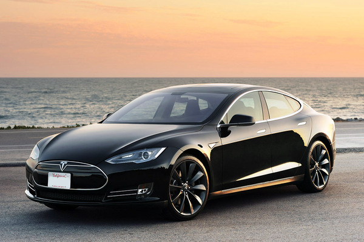
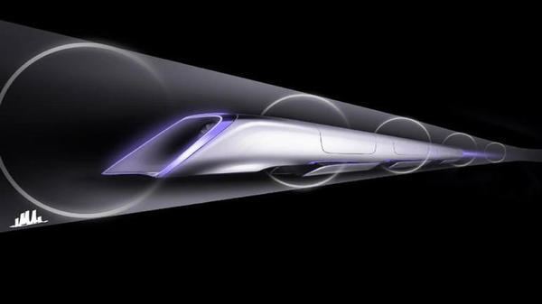

Zip2
In 1995, Musk started Zip2, a web software company, with his brother, Kimbal. The company developed and marketed an Internet "city guide" for the newspaper publishing industry.[28] Musk obtained contracts with The New York Times and the Chicago Tribune[29] and persuaded the board of directors to abandon plans for a merger with a company called CitySearch.[30] Compaq acquired Zip2 for US$307 million in cash and US$34 million in stock options in 1999.[31] Musk received 7% or $22 million from the sale.[29]
X.com and Paypal
In March 1999, Musk co-founded X.com, an online financial services and e-mail payment company.[28][30] One year later, the company merged with Confinity,[29][32] which had a money transfer service called PayPal. The merged company focused on the PayPal service and was renamed as PayPal in 2001. PayPal's early growth was driven mainly by a viral marketing campaign where new customers were recruited when they received money through the service.[33] In October 2002, PayPal was acquired by eBay for US$1.5 billion in stock, of which $165 million was given to Musk.[34] Before its sale, Musk, the company's largest shareholder, owned 11.7% of PayPal's shares.[35]
SpaceX
In March 1999, Musk co-founded X.com, an online financial services and e-mail payment company.One year later, the company merged with Confinity,which had a money transfer service called PayPal. The merged company focused on the PayPal service and was renamed as PayPal in 2001. PayPal's early growth was driven mainly by a viral marketing campaign where new customers were recruited when they received money through the service. In October 2002, PayPal was acquired by eBay for US$1.5 billion in stock, of which $165 million was given to Musk.Before its sale, Musk, the company's largest shareholder, owned 11.7% of PayPal's shares.
SpaceX was awarded a contract from NASA in 2006 to develop and test a new launch vehicle, Falcon 9, to transport cargo to the space station,followed by a $1.6 billion NASA contract on December 23, 2008 for 12 flights of its Falcon 9 rocket and Dragon spacecraft to the International Space Station, replacing the Space Shuttle after it retired in 2011. SpaceX is one of two contractors in the Commercial Resupply Services program, which replaces the cargo transport function of the Space Shuttle. Astronaut transport to the ISS is currently handled solely by the Soyuz, but as of 2014 SpaceX is also one of two companies remaining in the Commercial Crew Development program, which is intended to develop a US astronaut transport capability.Musk was influenced by Isaac Asimov's Foundation series and views space exploration as an important step in expanding—if not preserving—the consciousness of human life.
Musk said that multiplanetary life may serve as a hedge against threats to the survival of the human species. "An asteroid or a super volcano could destroy us, and we face risks the dinosaurs never saw: an engineered virus, inadvertent creation of a micro black hole, catastrophic global warming or some as-yet-unknown technology could spell the end of us. Humankind evolved over millions of years, but in the last sixty years atomic weaponry created the potential to extinguish ourselves. Sooner or later, we must expand life beyond this green and blue ball—or go extinct." His goal is to reduce the cost of human spaceflight by a factor of 10.[42] In a 2011 interview, he said he hopes to send humans to Mars' surface within 10–20 years. The SpaceX factory was used as a filming location for Iron Man 2 's Hammer Industries, and Musk has a cameo in the movie.
Tesla Motors
The company was co-founded by Martin Eberhard, Marc Tarpenning, JB Straubel, Ian Wright, and Musk. Tesla arose from a chance meeting between Straubel and Musk in 2004, a year after the company's initial incorporation in 2003.In this meeting Musk learned about the electric sports car demo from AC Propulsion.He tried to get them to develop it into a commercial electric car, but they weren't interested, so he and JB Straubel joined the other cofounders to create Tesla Motors. Musk provided most of the Series A funding necessary to turn Tesla from a business plan to a reality and service as Chairman and head of product design and engineering for the Roadster and later the Model S. Straubel led powertrain engineering.Other Series A investments groups included SDL Ventures and Compass Technology Partners. Following the financial crisis in 2008,Musk assumed leadership of the company as CEO and product architect, positions he still holds today. Tesla Motors first built an electric sports car, the Tesla Roadster, with sales of about 2,500 vehicles to 31 countries. Tesla began delivery of its four-door Model S sedan on June 22, 2012 and unveiled its third product, the Model X, aimed at the SUV/minivan market, on February 9, 2012. Model X is scheduled to begin production in early 2015. In addition to its own cars, Tesla sells electric powertrain systems to Daimler for the Smart EV, Mercedes B-Class Electric Drive and Mercedes A Class and to Toyota for the RAV4 EV. Musk was able to bring in both companies as long-term investors in Tesla.
Musk has favored building a sub-$30,000 subcompact and building and selling electric vehicle powertrain components so that other automakers can produce electric vehicles at affordable prices without having to develop the products in house.[51] Several mainstream publications have compared him with Henry Ford for his work on advanced vehicle powertrains. To overcome the range limitations of electric cars, Musk said in an interview with All Things D in May 2013 that Tesla is "dramatically accelerating" their network of supercharger stations, tripling the number on the East and West coasts of the U.S. that June, with plans for more expansion across North America, including Canada, throughout the year.He is reported to have a 32% stake in Tesla, which is valued at US$18 billion, as of November 2013.His annual salary at Tesla is one dollar, and similar to Steve Jobs and others, the remainder of his compensation is in the form of stock and performance-based bonuses. Tesla CEO Elon Musk announced in a press release and conference call and blog post on June 12, 2014 that the company will allow its technology patents for use by anyone in good faith, in a bid to entice automobile manufacturers to speed up development of electric cars. "The unfortunate reality is electric car programs (or programs for any vehicle that doesn't burn hydrocarbons) at the major manufacturers are small to non-existent, constituting an average of far less than 1% of their total vehicle sales," he said at the time.
Solar City
Musk provided the initial concept for SolarCity, which was then co-founded in 2006 by his cousins Lyndon and Peter Rive.Musk remains the largest shareholder. SolarCity is now the second largest provider of solar power systems in the United States. The underlying motivation for funding both SolarCity and Tesla is to help combat global warming.[61] In 2012, Musk announced that SolarCity and Tesla Motors are collaborating to use electric vehicle batteries to smooth the impact of rooftop solar on the power grid, with the program going live in 2013. On June 17, 2014, Musk committed to building a SolarCity advanced production facility in Buffalo, NY that would triple the size of the largest solar plant in the United States. Musk stated the plant will be "one of the single largest solar panel production plants in the world," and it will be followed by one or more even bigger facilities in subsequent years
Hyper Loop
On August 12, 2013, Musk unveiled a proposal for a new form of transportation between the Greater Los Angeles area and the San Francisco Bay Area, after being disappointed with the approved California High-Speed Rail system.[64] After envisioning Hyperloop, Musk assigned a dozen engineers from Tesla Motors and SpaceX who worked for nine months, establishing the conceptual foundations and creating the designs for the transportation system. An early design for the system was then published in a whitepaper posted to the Tesla and SpaceX blogs. Musk named it "hyperloop," a hypothetical subsonic air travel machine that stretches approximately 350 miles (560 km) from Sylmar (a northern district of Los Angeles) to Hayward (east of San Francisco) and would theoretically allow commuters to travel between the cities in 35 minutes or less, providing a shorter traveling time than even a commercial airplane can currently provide.[68] Musk's proposal, if technologically feasible at the costs he has cited, would make travel cheaper than any other mode of transport for such long distances. The system is proposed to use a partial vacuum to reduce aerodynamic drag, which it is theorized would allow for high speed travel with relatively low power. He has estimated the total cost of the system at $6 billion, but this amount is speculative.[69] It was proposed to rely completely on solar energy for all power requirements. On January 15, 2015 Elon Musk announced via Twitter that he would be building a 5 mile long Hyperloop track most likely in Texas for students and companies to work with